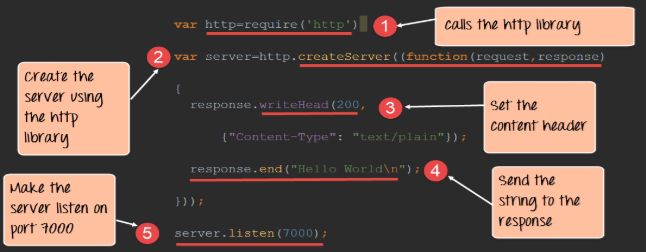

Node.js is a an open source, client side, but more of server-side platform that was created on Google Chrome’s Javascript or what they call ‘V8 Engine’. Node.js is primarily used for networking applications and server-side operations. It is also perfect for I/O bound applications, Data Streaming applications, Data Real Intensive Applications, JSON based applications, and single page applications. Its lightweight and efficient unique non-blocking I/O makes it perfect for real-time applications. Its libraries are the same concept with the Javascript. Thus making it much easier to develop web applications. Node.js is used by notable companies such as Microsoft, PayPal, Yahoo! And many more.
Like libraries in JavaScript, modules in Node.js are collection of single to multiple javascript files that performs a function which can be repeatedly used throughout the whole process of an application. The Node.js implements Common JS Modules Standard which defines the Javascript standards for web server, desktop, and application. The Node.js has three types of modules; The Core, Local, and the Third Party module. Each modules performs different kind of tasks
The Three Types of Modules in Node.Js:
In order for you to include modules that are included in the list of modules in node.js, you must first use the function require();
Syntax:
Require('Insert Module here');
Example:
Require('http');
In order for you to create your own module you must first use the keyword called 'exports' followed by the name of your method
Syntax:
exports.< method > = function();
Example:
Create a module that returns current date and time
Code:
exports.myDateTime = function date(){ return Date(); }
We are going to learn how node.js is used as a web server by providing you a simple example of sending a request from a client to the server, then the server responding to the client. The Node.js has an HTTP module that can create HTTP servers that gives a response to the client. The method ‘createServer()’ is used in creating HTTP server. It will be executed when someone tries to access the computer’s default port (8080). After establishing the server, you can now add headers specifically the response header ‘200’ or the ‘Ok’. What happens in this part is that once the client sends a request and it is received, the server will respond with a header. Once you’re done with the headers you can now send a string to the response. You can do it by typing ‘response.end();’. It will appear if the request is accepted and is successful. After that you can make the server listen to the clients on a specific port by typing the command ‘server.listen(*enter port no. here)’. Example below is provided.
